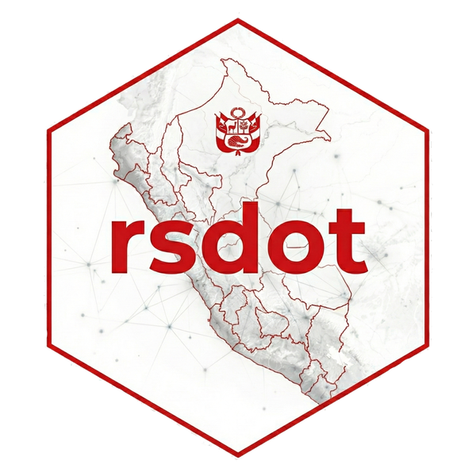

rsdot 
rsdot proporciona acceso programático a la información geográfica oficial producida y recopilada por la Secretaría de Demarcación y Organización Territorial (SDOT) de la Presidencia del Consejo de Ministros (PCM) del Perú.
El paquete facilita la descarga, almacenamiento en caché local, filtrado y manipulación en R de 35 capas vectoriales oficiales (226 GeoPackages particionados alojados en OSF), incluyendo:
- Límites Censales Oficiales: Departamentos, provincias y distritos (INEI 2023 y límites actualizados 2025)
- Centros Poblados y Demografía: Capitales, asentamientos dispersos, crecimiento intercensal y grillas de densidad poblacional
- Redes de Transporte: Red vial nacional (SINAC), departamental y vecinal, además de aeródromos
- Infraestructura Social y Pública: Establecimientos de salud (IPRESS - MINSA) e instituciones educativas (MINEDU)
- Modelos de Densidad Económica y Vivienda: Grillas de concentración espacial de comercio, mercados, servicios financieros, actividad inmobiliaria y viviendas
- Valor Agregado Bruto (VAB): Modelamiento de VAB a nivel de centros poblados (nacional, Lima y Callao)
- Movilidad Territorial y Flujos de Desplazamiento: Flujos interdistritales origen-destino de trabajadores y estudiantes
- Catastro Rural: Parcelas y polígonos de titulación rural (MIDAGRI)
- Telecomunicaciones: Cobertura móvil (2G, 3G, 4G, 5G) por centro poblado y estaciones base
- Peligros y Gestión del Riesgo de Desastres: Puntos y tramos críticos de inundación, zonas críticas por movimientos en masa, evaluaciones de riesgo y zonas de riesgo no mitigable
⚠️ Aviso Legal Importante
La información referencial de límites censales del INEI y los datos de modelamiento de la SDOT proporcionados por este paquete son referenciales, no constituyen límites territoriales oficiales ni tienen efecto demarcatorio legal.
Características Principales
- ✅ Cobertura Integral: 35 capas espaciales distintas distribuidas en 8 dominios temáticos.
- ✅ Acceso Remoto Automatizado: Descarga transparente desde almacenamiento en la nube OSF de alta disponibilidad con caché local persistente (
tools::R_user_dir). - ✅ Modo Local / Staging: Detecta conjuntos de datos locales en
sdot_data/para análisis sin conexión e integración continua. - ✅ Filtrado Administrativo Estandarizado: Filtrado insensible a mayúsculas por departamento, provincia y distrito sobre esquemas heterogéneos (
nombdep,nombprov,nombdist). - ✅ Manejo Robusto de Geometrías: Verificación automática con
st_make_valid()y validación de CRS (EPSG:4326). - ✅ Resiliencia de Codificación: Detección y reparación automática de anomalías Latin-1/UTF-8 (Mojibake).
- ✅ Compatible con Tidyverse y GIS Moderno: Integración nativa con
sf,terra,dplyryggplot2.
📦 Funciones Disponibles por Dominio
1.️ Límites Censales y Organización Territorial
-
get_departamentos()- Límites censales departamentales (INEI 2023). -
get_provincias(departamento)- Límites censales provinciales. -
get_distritos(departamento, provincia, ano)- Límites censales distritales (2023 o 2025). -
get_distritos_2025(departamento, provincia)- Límites distritales actualizados 2025. -
get_capitales()- Capitales departamentales, provinciales y distritales. -
get_centros_poblados(departamento, provincia, distrito)- Centros poblados y asentamientos dispersos.
2.️ Redes de Transporte y Aeródromos
-
get_red_vial_nacional()- Red vial nacional (SINAC / MTC). -
get_red_vial_departamental(departamento, provincia)- Red vial departamental. -
get_red_vial_vecinal(departamento, provincia)- Red vial vecinal y rural. -
get_aerodromos(departamento)- Aeropuertos, aeródromos y pistas de aterrizaje.
3. Infraestructura Social y Servicios Públicos
-
get_ipress(departamento, provincia, distrito)- Establecimientos de salud (IPRESS - MINSA/SDOT). -
get_locales_educativos(departamento, provincia, distrito)- Locales educativos (MINEDU). -
get_servicios_educativos(departamento, provincia, distrito)- Servicios educativos por nivel y modalidad.
4. Demografía y Accesibilidad Territorial
-
get_densidad_poblacional(departamento, provincia, distrito)- Grilla de densidad poblacional intercensal (2007-2017). -
get_centros_poblados_crecimiento(departamento)- Tasa de crecimiento poblacional intercensal por centro poblado. -
get_tiempos_desplazamiento(departamento, area_interes)- Isócronas de tiempo de desplazamiento a la capital más cercana.
5. Densidades Económicas y de Vivienda
-
get_densidad_actividades(tipo, departamento)- Grillas espaciales de densidad de actividades económicas y viviendas. -
get_densidad_comercio(departamento)- Densidad de actividad comercial. -
get_densidad_mercados(departamento)- Densidad de mercados de abastos. -
get_densidad_financiero(departamento)- Densidad de servicios financieros y bancarios. -
get_densidad_inmobiliario(departamento)- Densidad de actividad inmobiliaria. -
get_densidad_viviendas(departamento)- Densidad de viviendas. -
get_vab_ccpp(cobertura, departamento)- Valor Agregado Bruto (VAB) modelado para centros poblados (total,lima,callao).
6. Movilidad Territorial y Flujos de Desplazamiento
-
get_flujos_movilidad(tipo, rango)- Flujos diarios de movilidad interdistrital entre centroides. -
get_flujos_estudiantes(rango)- Flujos de desplazamiento de estudiantes ("100_1000","1000_3500","3500_7000","7000_13000","13000"). -
get_flujos_trabajadores(rango)- Flujos de desplazamiento de trabajadores ("100_1500","1500_5000","5000_10000","10000_25000","25000").
7. Catastro Rural y Propiedad
-
get_catastro_rural(departamento)- Parcelas rurales y polígonos de titulación (MIDAGRI/SDOT).
8. 📶 Telecomunicaciones
-
get_cobertura_movil(departamento, provincia, distrito)- Cobertura de telefonía e internet móvil (2G, 3G, 4G, 5G). -
get_cobertura_movil_c(departamento, provincia, distrito)- Cobertura móvil por cantidad de operadoras por centro poblado.
9. Peligros y Gestión del Riesgo de Desastres
-
get_peligros(tipo, departamento)- Función general para capas de peligros naturales. -
get_puntos_criticos(departamento)- Puntos críticos de inundación (ANA / SDOT). -
get_tramos_criticos(departamento)- Tramos críticos expuestos a inundación. -
get_zonas_criticas(departamento)- Zonas críticas por movimientos en masa (INGEMMET). -
get_areas_inundacion(departamento)- Polígonos de áreas de exposición a inundación. -
get_areas_movimientos_masa(departamento)- Polígonos de áreas de exposición a movimientos en masa. -
get_inventario_inundaciones(departamento)- Inventario histórico de inundaciones. -
get_riesgos(tipo, departamento)- Función general para capas de riesgo de desastres. -
get_evaluacion_riesgos(departamento)- Evaluaciones de riesgo de desastres (EVAR / CENEPRED). -
get_zonas_riesgos_no_mitigable(departamento)- Zonas de riesgo no mitigable.
10. ⚙️ Descubrimiento de Catálogo y Mantenimiento
-
list_available_layers(domain)- Inspecciona el catálogo completo de 35 capas disponibles, descripciones y funciones. -
rsdot_check_updates()- Audita el estado de la caché local, tamaños de archivo y fechas de descarga. -
clear_rsdot_cache(layer)- Limpia capas específicas o toda la caché local.
🗺️ Matriz de Cobertura (GeoSDOT vs rsdot)
| Dominio | Capa Fuente GeoSDOT | Función en rsdot | Granularidad / Partición |
|---|---|---|---|
| Límites | geoportal:v_departamentos_2023 |
get_departamentos() |
Nacional |
| Límites | geoportal:v_provincias_2023 |
get_provincias() |
Nacional / Departamento |
| Límites | geoportal:v_distritos_2023 |
get_distritos(ano = 2023) |
Nacional / Departamento / Provincia |
| Límites | geoportal:v_distritos_2025 |
get_distritos_2025() |
Nacional / Departamento / Provincia |
| Límites | geoportal:v_capitales |
get_capitales() |
Nacional / Departamento |
| Límites | geoportal:ccpp_asentamientos_dispersos |
get_centros_poblados() |
Departamento / Provincia / Distrito |
| Transporte | geoportal:v_red_vial_nacional |
get_red_vial_nacional() |
Nacional / Departamento |
| Transporte | geoportal:v_red_vial_departamental |
get_red_vial_departamental() |
Departamento / Provincia |
| Transporte | geoportal:v_red_vial_vecinal |
get_red_vial_vecinal() |
Departamento / Provincia |
| Transporte | geoportal:v_aerodromos |
get_aerodromos() |
Departamento |
| Servicios | geoportal:v_ipress |
get_ipress() |
Departamento / Provincia / Distrito |
| Servicios | geoportal:v_locales_educativos |
get_locales_educativos() |
Departamento / Provincia / Distrito |
| Servicios | geoportal:v_servicios_educativos |
get_servicios_educativos() |
Departamento / Provincia / Distrito |
| Demografía | geoportal:v_densidad_poblacional |
get_densidad_poblacional() |
Departamento / Provincia / Distrito |
| Demografía | geoportal:v_ccpp_crecimiento |
get_centros_poblados_crecimiento() |
Departamento |
| Demografía | geoportal:v_tiempo_desplazamiento |
get_tiempos_desplazamiento() |
Departamento / Polígono AOI |
| Economía | geoportal:v_densidad_comercio |
get_densidad_comercio() |
Nacional / Departamento |
| Economía | geoportal:v_densidad_mercados |
get_densidad_mercados() |
Nacional / Departamento |
| Economía | geoportal:v_densidad_financiero |
get_densidad_financiero() |
Nacional / Departamento |
| Economía | geoportal:v_densidad_inmobiliario |
get_densidad_inmobiliario() |
Nacional / Departamento |
| Economía | geoportal:v_densidad_viviendas |
get_densidad_viviendas() |
Nacional / Departamento |
| Economía | geoportal:v_vab_ccpp_* |
get_vab_ccpp() |
Nacional / Lima / Callao |
| Movilidad | geoportal:v_flujos_estudiantes_* |
get_flujos_estudiantes() |
Nacional (Rangos) |
| Movilidad | geoportal:v_flujos_trabajadores_* |
get_flujos_trabajadores() |
Nacional (Rangos) |
| Catastro | geoportal:v_catastro_rural |
get_catastro_rural() |
Nacional / Departamento |
| Telecom | geoportal:cobertura_movil_oper |
get_cobertura_movil() |
Departamento / Provincia / Distrito |
| Telecom | geoportal:cobertura_movil_c |
get_cobertura_movil_c() |
Departamento / Provincia / Distrito |
| Peligros | geoportal:v_peligros_inundacion |
get_areas_inundacion() |
Departamental (25) |
| Peligros | geoportal:v_puntos_criticos_inundaciones |
get_puntos_criticos() |
Departamental (25) |
| Peligros | geoportal:v_tramos_criticos_inundaciones |
get_tramos_criticos() |
Departamental (24) |
| Peligros | geoportal:v_inventario_inundaciones |
get_inventario_inundaciones() |
Departamental (25) |
| Peligros | geoportal:v_peligros_movimientos_masa |
get_areas_movimientos_masa() |
Departamental (25) |
| Peligros | geoportal:v_zonas_criticas_movimientos_masa |
get_zonas_criticas() |
Departamental (25) |
| Riesgos | geoportal:v_evaluacion_riesgos |
get_evaluacion_riesgos() |
Departamental (25) |
| Riesgos | geoportal:v_zonas_riesgos_no_mitigable |
get_zonas_riesgos_no_mitigable() |
Departamental (9) |
📦 Instalación
Instala la versión en desarrollo desde GitHub:
# Usando pak (recomendado)
install.packages("pak")
pak::pak("PaulESantos/rsdot")
# O usando remotes
install.packages("remotes")
remotes::install_github("PaulESantos/rsdot")Ejemplos de Uso
1. Límites Censales y Filtrado Territorial
library(rsdot)
library(sf)
library(ggplot2)
library(dplyr)
# 1. Descargar límites departamentales oficiales
deps <- get_departamentos()
# 2. Obtener distritos actualizados 2025 para una provincia específica
dist_cusco_2025 <- get_distritos_2025(departamento = "CUSCO", provincia = "CUSCO")
# Visualizar
ggplot(dist_cusco_2025) +
geom_sf(aes(fill = nombdist), color = "white", linewidth = 0.3) +
theme_minimal() +
labs(
title = "Distritos de la Provincia de Cusco (2025)",
subtitle = "Actualización Referencial de Límites Censales INEI",
fill = "Distrito"
)2. Actividades Económicas y Densidad de Viviendas
# Densidad de actividad comercial en Arequipa
comercio_arequipa <- get_densidad_comercio(departamento = "AREQUIPA")
# Graficar densidad
ggplot(comercio_arequipa) +
geom_sf(aes(fill = factor(nivel)), color = NA) +
scale_fill_viridis_d(option = "magma", name = "Nivel de Densidad") +
theme_minimal() +
labs(
title = "Grilla de Densidad Comercial",
subtitle = "Departamento de Arequipa | Modelamiento GeoSDOT",
caption = "Fuente: SDOT - PCM"
)
# Valor Agregado Bruto (VAB) para Lima Metropolitana
vab_lima <- get_vab_ccpp(cobertura = "lima")
head(vab_lima)3. Movilidad Interdistrital y Flujos de Desplazamiento
# Recuperar flujos de movilidad de estudiantes (rango 100 - 1,000 viajes)
flujos_est <- get_flujos_estudiantes(rango = "100_1000")
# Resumen de los pares origen-destino con mayor volumen
flujos_est |>
st_drop_geometry() |>
arrange(desc(viajes)) |>
head(10)4. Peligros Naturales y Gestión del Riesgo de Desastres
# Descargar puntos críticos de inundación en Callao
pc_callao <- get_puntos_criticos(departamento = "CALLAO")
# Obtener zonas de riesgo no mitigable en Lima
rnm_lima <- get_zonas_riesgos_no_mitigable(departamento = "LIMA")
# Consultar zonas críticas por movimientos en masa en Cusco
zc_cusco <- get_zonas_criticas(departamento = "CUSCO")5. Infraestructura de Salud en Múltiples Departamentos
# Descargar establecimientos de salud del sur del Perú
ipress_sur <- get_ipress(departamento = c("CUSCO", "AREQUIPA", "PUNO"))
# Conteo por categoría de establecimiento
table(ipress_sur$categoria)6. Descubrimiento de Capas y Mantenimiento de Caché
# Listar las 35 capas disponibles
all_layers <- list_available_layers()
all_layers[, c("Capa", "Descripcion", "Funcion_R")]
# Verificar estado de la caché local
rsdot_check_updates()
# Limpiar una capa específica de la caché
clear_rsdot_cache("ipress")Fuentes de Datos
Los conjuntos de datos geográficos proporcionados por este paquete son recopilados de fuentes oficiales por:
- Secretaría de Demarcación y Organización Territorial (SDOT-PCM): Geoportal GeoSDOT
- Instituto Nacional de Estadística e Informática (INEI)
- Ministerio de Transportes y Comunicaciones (MTC)
- Ministerio de Salud (MINSA)
- Ministerio de Educación (MINEDU)
- Ministerio de Desarrollo Agrario y Riego (MIDAGRI)
-
Open Science Framework (OSF): Repositorios
qy4j6ydemarca